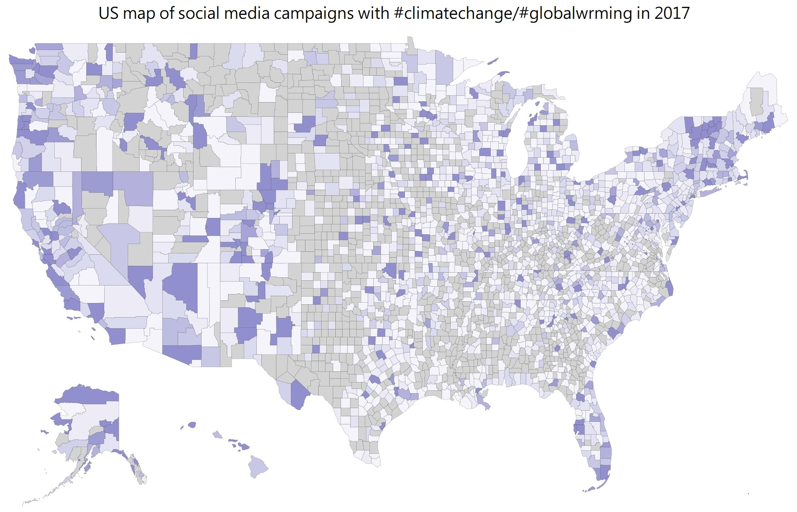

Hello!
My name is Byeong-Hak Choe. I am a PhD candidate in Economics at the University of Wyoming.
My research interests include analyzing the interplay between the economy and the environment, particularly for the climate, as well as designing new climate-economy models to demonstrate how the climate shapes the economy, and vice versa.
Here is my curriculum vitae .
.

Contact
Byeong-Hak Choe | bchoe@uwyo.edu
Department of Economics
College of Business Department 3985
Laramie, WY 82071 USA
Design forked & modified from kborman and mbcarlos
Department of Economics
College of Business Department 3985
Laramie, WY 82071 USA
Design forked & modified from kborman and mbcarlos